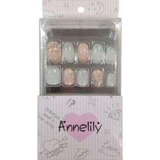

返回列表
产品名称：アンリリーネイルチップ ＡＮ－０３２

ウィング・ビート アンリリーネイルチップ ＡＮ－０３２ １６枚
メーカー ウィング・ビート
JANコード 4562120518989
商品の特徴
ネイルチップです
- 成分・分量
- ＜材質＞
ネイルチップ：ASB樹脂
- 用法及び用量
- ＜使用方法＞
■マニキュアやアートは除光液で拭き取っておいてください。
■自爪を白い部分がなくなる程度に切ってください。
■自爪の表面をファイルで軽く削ってください。
■自爪に合うチップを選んでください。（親指No．1・No．2、人差し指・中指・薬指No．4～No．6、小指No．8・No．9）
■自爪の根元に合わせてチップをファイルで削ると剥がれにくく保ちもよくなり、見た目もきれいに仕上がります。
■自爪をキレイにしてから市販のグルー（接着剤）をつけ、ツケ爪を自爪の根元に合わせ密着させるように強く押しあてて下さい。
■市販のグルー（接着剤）をご使用した場合のチップは使い捨てとなります。
■ツケ爪を初めてご使用する方や繰り返しご使用されたい方は、同梱の粘着グミまたは市販のツケ爪用両面テープや粘着剤のご使用をおすすめします。